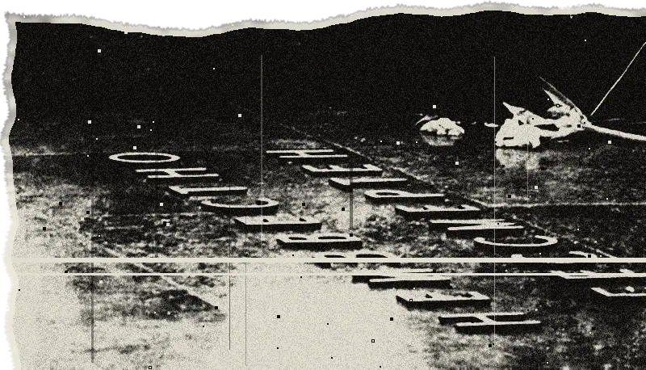
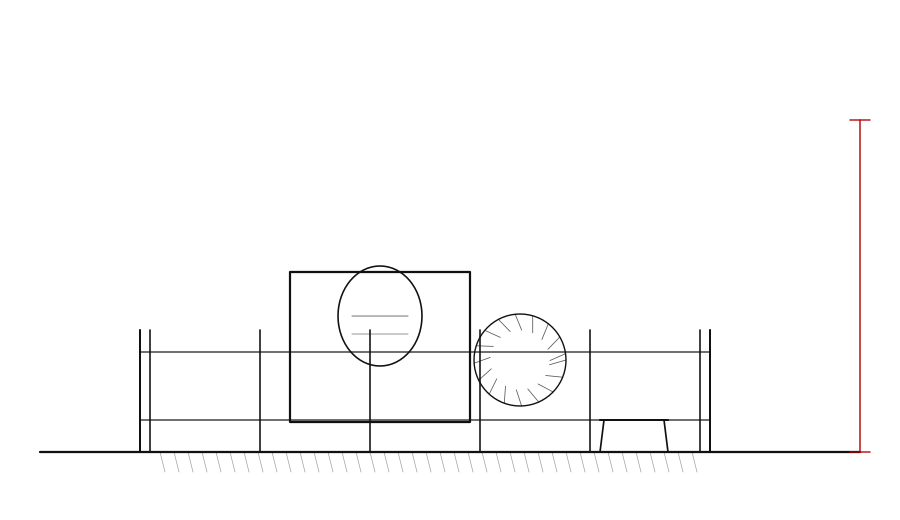

PLATE K · 11 / 12
THE SOVIET AFTERLIFE
Cremation, the civil funeral, and the industry that followed
The Soviet state did not abolish the funeral. It rebuilt it as a ceremony of the collective, and then the collective dissolved.
1920s–2020s · Moscow; St Petersburg; Russia · State secular ritual; Orthodox revival; commercial funeral services

K / 01
A crematorium in a church
In 1925 the Moscow Soviet decided to build a crematorium and chose, as its site, the church of St Seraphim of Sarov and St Anna of Kashin at the Donskoy Monastery. The furnace was made by a German firm; the first cremation took place on 12 January 1927, and the official opening was held on 6 October 1927, without ceremony, according to the Moscow press account.
The building is the argument. A church, built for the burial of bodies and the prayer for the dead, was converted into a machine for their disappearance. The Soviet state did not need a new architecture for this; it needed a confiscated one.
K / 02
The civil funeral
The Soviet funeral was a ceremony without a priest: a hall, a portrait, an orchestra, a speech, a red coffin, medals carried on cushions, a grave in a designated section. The ritual was designed to be legible, repeatable and secular, and it was administered by the same municipal apparatus that handled housing and sanitation.
It did not remove grief; it gave grief a script and a timetable. Merridale’s account of the twentieth century is largely about what happened when the script and the experience did not match — and about the private, domestic mourning that continued alongside the public one.

| Date | Event | Source |
|---|---|---|
| 10 Oct 1723 | Decree restricting burial inside towns | Pravenc, ‘Nadgrobie’ |
| 1771 | Plague in Moscow; Vagankovo founded | Mos.ru, Vagankovo history |
| 1925 | Moscow Soviet decides to build a crematorium | Moskovskaia pravda, 2017 |
| 12 Jan 1927 | First cremation at Donskoy | Moskovskaia pravda, 2017 |
| 6 Oct 1927 | Official opening of the crematorium | Moskovskaia pravda, 2017 |
| 9 May 1960 | Piskaryovskoye memorial opened | Piskaryovskoye museum |
| 8 May 1967 | Tomb of the Unknown Soldier opened | Mos.ru / Glavarkhiv |
| 1991– | End of the state funeral monopoly; commercial services expand | Interpretation, unsourced here |
K / 03
After 1991
The post-Soviet funeral is a market. Private funeral homes, municipal cemeteries with fee schedules, monument workshops, wreath sellers and, more recently, online memorial pages form an industry that the Soviet system had tried to keep inside the state. Orthodox practice returned in parallel — sometimes inside the same funeral, with the priest arriving after the orchestra.
The atlas has not found a reliable scholarly account of this transition in the sources used here. This section is therefore marked as an editorial sketch, and the digital memorial is marked as an open question rather than described as a fact.


Apparatus sources · related plates · terms
Sources for this plate
- mospravda-crematorium Moskovskaia pravda — Ognennoe pogrebenie (2017)
- merridale2000 Merridale, Catherine — Night of Stone: Death and Memory in Russia (2000)
- tumarkin1994 Tumarkin, Nina — The Living and the Dead: The Rise and Fall of the Cult of World War II in Russia (1994)
- yurchak2006 Yurchak, Alexei — Everything Was Forever, Until It Was No More: The Last Soviet Generation (2006)
URLs, access dates and limitations are in the bibliography.